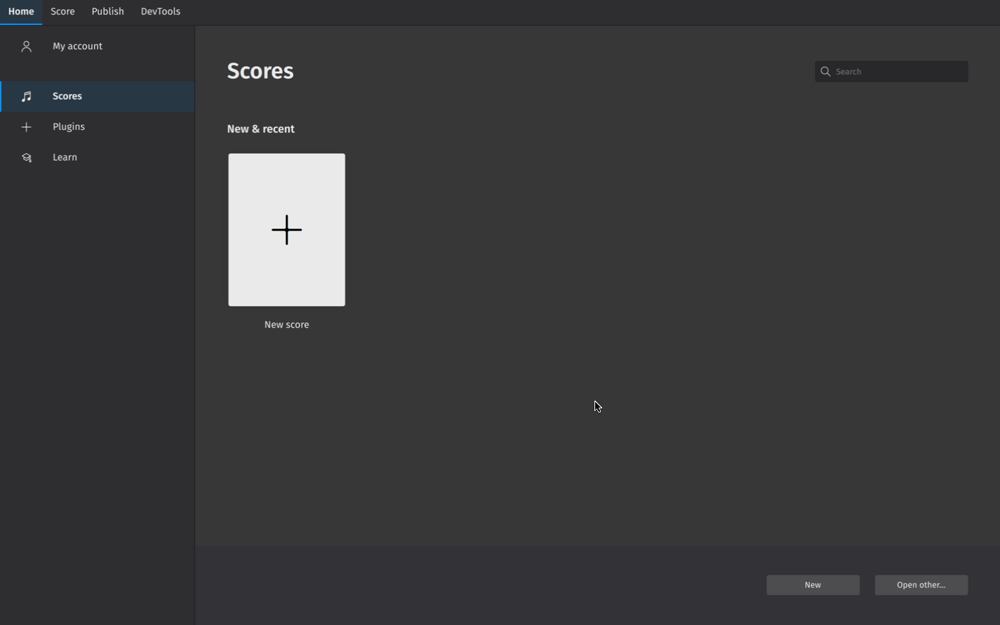
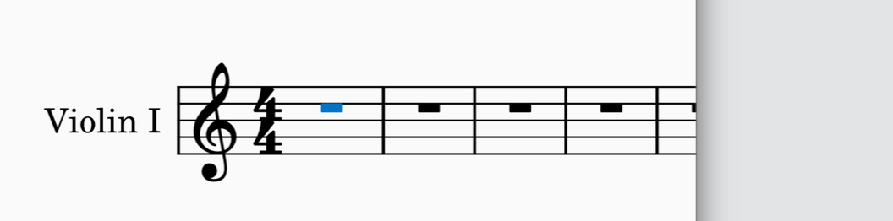
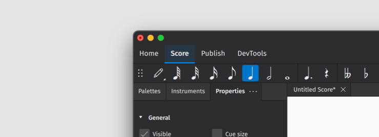
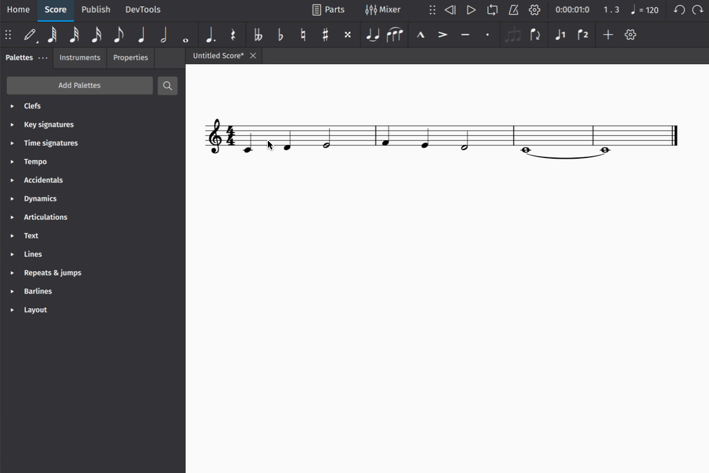
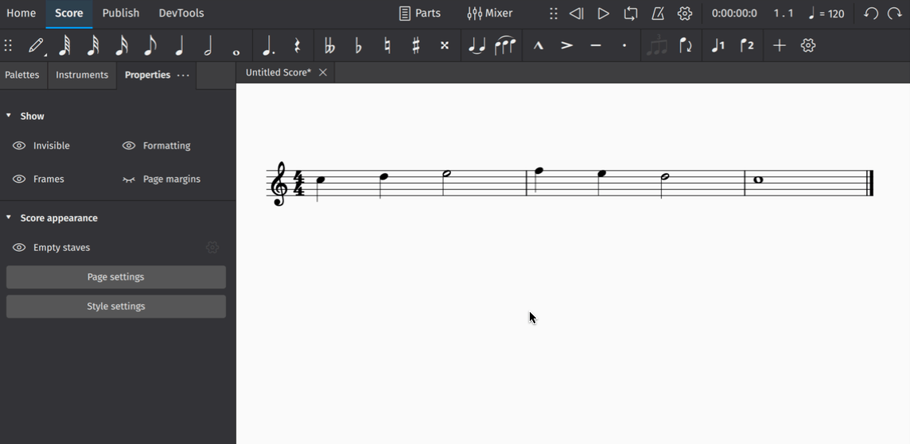

创建你的第一份乐谱
我们先从模板创建一个新乐谱开始（或者，你可以了解如何在添加和移除乐器中从头创建乐谱）。
要从模板创建乐谱：
- 在乐谱界面中单击新建乐谱
- 在出现的新建乐谱对话框中，按类别浏览模板，或使用搜索栏直接查找模板
- 单击下一步以输入更多乐谱信息（或跳过此步骤，让 MuseScore 用默认信息预填你的乐谱，你以后随时可以更改）
- 单击完成以创建新乐谱

输入乐谱信息
在更多乐谱信息界面中，你可以设置：
- 初始调号（默认调号不含任何升号或降号）
- 初始拍号（默认拍号为 4/4）
- 初始速度（单击速度，然后在我的乐谱上显示速度标记，才会显示出来）
- 弱起小节（anacrusis 或 upbeat 小节）及其时值
- 乐谱中的初始小节数（默认为 32，但你可以在乐谱编辑窗口中添加/移除小节）
输入音符
在 MuseScore 中输入音符最简单的方法是：
- 按键盘上的 N 键进入音符输入模式
- 开始输入音符名称（A、B、C、D、E、F、G）

你现在正在 MuseScore 中进行制谱！你会注意到蓝色的音符输入高亮，这表示你处于音符输入模式。它会显示你的下一个音符将输入到小节中的哪个位置。
你可以在音符输入工具栏中指定所输入每个音符的时值。要更改音符时值：
- 确保你处于音符输入模式（见上文）
- 单击所需的音符时值，或
- 使用快捷键 1 到 7 选择不同的音符时值

在输入音符和休止符中了解有关此主题的更多信息。
从面板中添加元素
面板（Palettes）面板包含几乎所有你可能需要用来为乐谱添加细节的记谱对象。将面板元素添加到你的乐谱最简单的方法是：
- 选择乐谱中的现有对象（或对象范围）（例如符头、谱号、小节等）
- 在面板面板中，单击三角形箭头按钮打开一个面板
- 单击面板对象一次

在面板中了解有关此主题的更多信息
在属性中做调整
属性面板可以通过单击屏幕左侧的属性选项卡来显示：

（4 版之前的 MuseScore 用户将其称为检查器。）
属性面板将显示特定于所选对象的设置。这些设置通常会影响所选对象的视觉外观。大多数情况下，你在属性中所做的更改只会应用于你选中的对象（例如，你只会更改选中的力度变化线，而不是乐谱中的每一条力度变化线）。
在你为乐谱添加细节时，单击任意对象以查看可用的设置。

在属性中了解有关此主题的更多信息。
插入和删除小节
要插入单个小节：
- 单击一个小节将其选中
- 在属性的小节部分中，单击插入小节
- 单击 + 按钮
这个小节部分包含可让你一次插入多个小节的控制项。只需在文本字段中设置你希望插入的小节数。你还可以使用下拉菜单更改插入新小节的位置。
要删除一个小节或一组小节：
- 选择你要删除的小节
- 在小节弹出窗口中，单击垃圾桶图标

有关此主题的更多信息，请参见小节。
保存你的乐谱
要将乐谱保存到计算机的本地硬盘：
- 选择文件→保存
- 在出现的对话框中，选择文件夹并填写文件名等所需信息，单击保存或确定
要将乐谱保存到 musescore.com 上的云端：
- 选择文件→保存到云端。
- 你可能会被要求登录 musescore.com 上的账户。
- 填写乐谱的名称。
- 设置可见性。私密表示只有你才能看到乐谱。不公开列出表示任何拥有正确链接的人都可以看到你的乐谱。公开表示任何人都可以看到你的乐谱。
- 按下保存。
你可以通过转到首页 > 乐谱 > 我的在线乐谱来查找所有云端乐谱（寻找标有蓝色小云朵符号的文件）。在打开和保存乐谱中了解更多信息。
导出你的乐谱
导出可让你创建非 MuseScore 文件，例如 PDF、MusicXML、MIDI 以及各种音频和图片格式。
要导出你的乐谱：
- 选择发布选项卡
- 单击导出
- 选择你要导出的分谱
- 为导出的文件选择文件格式
- 如果导出多个分谱，请选择是将每个分谱合并到一个文件中，还是分别导出为单独的文件
- 单击导出
你也可以在 musescore.com 上在线分享乐谱。